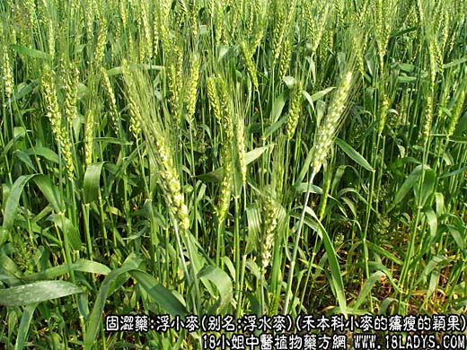
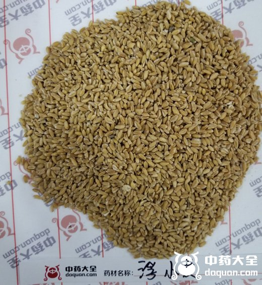
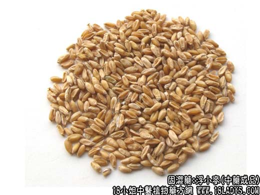
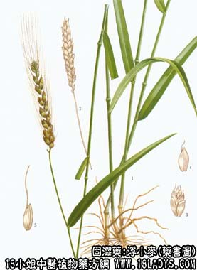

浮小麦源植物图片

浮小麦图片

浮小麦中药图片

本品为少常用中药。始载《本草纲目》小麦项下，名浮麦，即水淘浮起者。
来源：为禾本科一年或二年生草本植物小麦的干品、轻浮、瘪瘦的颖果。均为栽培。
产地：全国各地均有生产。
性状鉴别：颖果长圆形，长约3～6厘米，直径约2～3毫米。表面黄白色或黄棕色。略抽皱，腹面有一深陷的纵沟。顶端钝，带有黄色柔毛，低端成斜尖形，有脐。质硬，断面白色。有粉性。气无，味淡。以颗粒均匀，轻浮者为佳。
主要成分：含淀粉、蛋白质、脂肪、钙、磷、铁盒乙种维生素。
功效与作用：止汗。镇静、抗利尿。
炮制：生用。
性味：甘、咸、凉。
归经：入心经。
功能：益气，除热，止汗。
主治：自汗，盗汗，骨蒸虚热。
临床应用：1、用于止汗。治疗各种虚汗、盗汗，单用虽有效，但多配麻黄根。牡蛎、黄芪等加强止汗作用，也可配橹豆衣，方如浮小麦橹豆煎剂，据观察，此方治疗肺结核盗汗效果较好。2、用于抗利尿，治疗小儿遗尿，配桑螵蛸、益智仁等，效果较好，方如加味甘麦大枣汤。
用量：15～60g。
处方举例：浮小麦橹豆衣煎剂：浮小麦、橹豆衣各9g，加水200毫升，浓缩至100毫升，每服50毫升，一日二次。
加味甘麦大枣汤：炙甘草12g，浮小麦18g，菟丝子9g，炙桑螵蛸9g，煨益智仁9g，龙骨6g，大枣24g，水煎服。
注：浮小麦，应取用水淘轻浮水面的麦粒，并以冬小麦为佳。但有的地区以充实饱满的小麦作浮小麦药用，按小麦功能养心除烦，适用于妇女脏燥喜怒无常之症（癔病）。